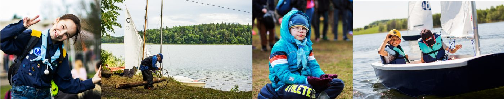
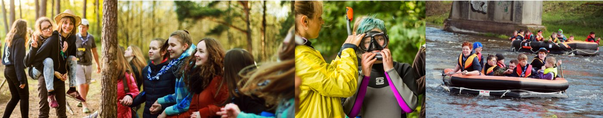
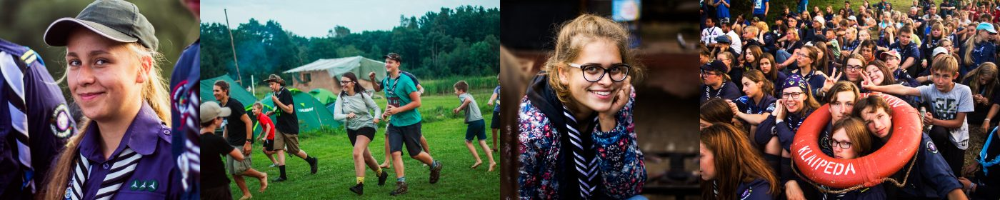
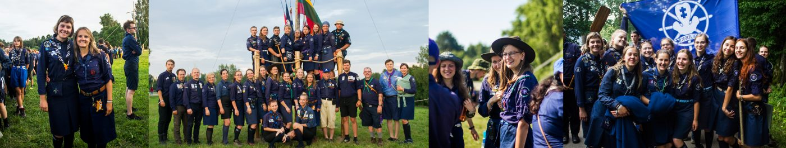
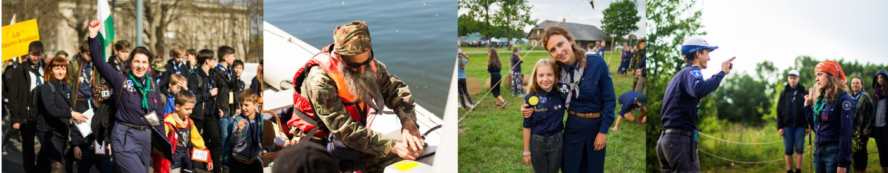

6–10 m.
Jaunesnieji jūrų skautaiJunior Sea Scouts
PlačiauRead moreSuskleistiShow lessPagrindinis mokymosi instrumentas – žaidimai. Įsijausdami į „bebriukų“ vaidmenį, tyrinėdami upes ir gamtą, vaikai patiria nuotykius ir mokosi pažinti save bei aplinką. Saliutuoja dviem pirštais – Dievui ir Tėvynei.Their main learning tool is play. Stepping into the role of "beavers", exploring rivers and nature, the children experience adventures and learn about themselves and the world. They salute with two fingers — for God and Homeland.
Jaunesniesiems jūrų skautams pagrindinis mokymosi instrumentas yra žaidimai ir jų vaizduotėje sukurtas pasaulis. Įsijausdami į bebriukų vaidmenį (taip jie yra vadinami), tyrinėdami upes ir gamtą, patiria daug nuotykių ir mokosi pažinti save bei aplinką. Programa vyksta didelėse grupėse, kur vadovas yra besąlygiškas autoritetas. Jis paskirsto vaikams nedidelius darbelius, taip vaikai mokosi atsakomybės. Jaunesnieji skautai saliutuoja dviem pirštukais – Dievui ir Tėvynei. Jie per maži prisižadėti rūpintis artimu, tačiau nuo pat mažų dienų ugdoma meilė Tėvynei – giedamas himnas, minimos valstybinės šventės. Kiekvieną dieną jaunesnieji jūrų skautai skatinami padaryti po vieną gerąjį darbelį, tai jiems primena mazgelis ant kaklaraiščio.For junior sea scouts the main learning tool is play and the world they create in their imagination. Stepping into the role of "beavers" (as they are called), exploring rivers and nature, they have many adventures and learn to know themselves and their surroundings. The programme runs in large groups where the leader is an unquestioned authority, handing out small tasks so the children learn responsibility. Juniors salute with two fingers — for God and Homeland. They are too young to promise to care for their neighbour, but love for the Homeland is nurtured from an early age — singing the anthem and marking national holidays. Every day juniors are encouraged to do one good deed, reminded by the knot on their neckerchief.

11–14 m.
Jūrų skautaiSea Scouts
PlačiauRead moreSuskleistiShow lessDirba mažomis grupelėmis – valtimis (5–9 vaikai). Kiekvienas narys turi pareigas ir atsakomybę už bendrą veiklą. Didelis dėmesys jūrinei programai ir vandens užsiėmimams. Saliutuoja trimis pirštais – Dievui, Tėvynei, artimui.They work in small teams — "boats" of 5–9 children. Every member has duties and responsibility for the shared work. Strong focus on the maritime programme and water activities. They salute with three fingers — for God, Homeland and neighbour.
Jūrų skautai dirba mažesnėmis grupelėmis – valtimis, kurias sudaro 5–9 vaikai. Kiekvienas valties narys yra labai svarbus ir turi savo pareigas. Vadovas vis dar užima svarbų vaidmenį, tačiau vaikai skatinami įsitraukti į sueigų planavimą ir užsiėmimų pravedimą bendraamžiams. Šis amžiaus tarpsnis labai svarbus – prasideda perėjimas į paauglystę ir vertybių paieškos, todėl veikla skirta tobulėti ir stiprinti save ne tik fiziškai, bet ir dvasiškai. Užsiėmimuose didelis dėmesys skiriamas jūrinei programos daliai, padedant geriau suvokti Lietuvos kaip jūrinės valstybės idėją ir susipažinti su įvairiausiais vandens užsiėmimais. Skautai saliutuoja trimis pirštais – Dievui, Tėvynei, artimui.Sea scouts work in smaller teams — "boats" of 5–9 children. Every member is important and has their own duties. The leader still plays a key role, but the children are encouraged to join in planning meetings and running activities for their peers. This age is crucial — the transition into adolescence and the search for values begins, so activities aim to develop and strengthen them physically and spiritually, fostering tolerance for one another. A strong focus is placed on the maritime part of the programme, helping them grasp the idea of Lithuania as a maritime nation and try all kinds of water activities. They salute with three fingers — for God, Homeland and neighbour.

15–17 m.
Patyrę jūrų skautaiSenior Sea Scouts
PlačiauRead moreSuskleistiShow lessSavarankiškumas geriausiai apibūdina šią grupę. Patys organizuoja veiklą, padeda vadovams, įsitraukia į renginių ir stovyklų organizavimą. Stipri vandens programa, buriavimas, irklavimas, žygiai ir charakterį grūdinantys iššūkiai.Independence best describes this group. They organise activities themselves, help leaders and take part in running events and camps. A strong water programme, sailing, paddling, expeditions and character-building challenges.
Ši amžiaus grupė – didelė pagalba vyresniesiems: dažnai padeda vadovams vesti užsiėmimus mažesniesiems, aktyviai įsitraukia į renginių ir stovyklų organizavimą. Savarankiškumas geriausiai apibūdina patyrusius jūrų skautus – visą veiksmą jie organizuoja patys, prisiimdami vis didesnes atsakomybes, ir gali išbandyti save įvairiose pareigose. Ypatingai svarbus darbas valtimis, kai vadovas lieka stebėtojo, lydinčio asmens pozicijoje. Keliami vis didesni iššūkiai sau – fizinės ištvermės užduotys, žygiai, ypač stipri vandens programa, buriavimas, irklavimas. Iššūkiai prisideda prie savęs ieškojimo ir charakterio formavimo.This age group is a big help to the older members — they often help leaders run activities for the younger ones and take an active part in organising events and camps. Independence best describes senior sea scouts: they organise everything themselves, taking on ever greater responsibility and trying themselves in various roles. Working in "boats" is especially important, with the leader stepping back into an observing, accompanying role. They set themselves bigger and bigger challenges — tasks demanding physical endurance, expeditions, an especially strong water programme, sailing and paddling. These challenges feed self-discovery and character building.

17–29 m.
Vyr. skautai – gintarės ir budžiaiRover Scouts
PlačiauRead moreSuskleistiShow lessPaslaptimis apipintas vyr. skautavimas domina kiekvieną. Ypatingą vietą užima individualus, vidine motyvacija pagrįstas darbas su savimi, keliantis iššūkius ir apimantis esmines gyvenimo vertybes. Programa prieinama tik jos dalyviams.Rover scouting, wrapped in a bit of mystery, intrigues everyone. Its heart is individual, intrinsically motivated work on oneself — challenging yourself while embracing the core values needed in life. The programme is open only to its participants.
Paslaptimis apipintas vyr. skautavimas domina kiekvieną – tiek jaunesnįjį, tiek patyrusį jūrų skautą. Tai laikas, kai jaunas žmogus ruošiasi išeiti iš saugios aplinkos, o vertybių sistema dar nėra galutinai susiformavusi. Vyr. skautavime ypatingą vietą užima individualus, vidine motyvacija pagrįstas darbas su savimi, turintis žaidimo elementų, keliantis iššūkius pačiam sau, bet kartu apimantis esmines gyvenime reikalingas vertybes. Vyr. skautų programa yra slapta ir prieinama tik jos dalyviams.Rover scouting, wrapped in mystery, intrigues everyone — both junior and senior sea scouts. It's the time when a young person prepares to leave the safe environment, while their value system is not yet fully formed. At its heart is individual, intrinsically motivated work on oneself, with elements of play, challenging yourself while embracing the core values needed in life. The rover programme is secret and open only to its participants.

18+ m.
Savanoriai ir vadovaiVolunteers & leaders
PlačiauRead moreSuskleistiShow lessSkautuose laukiami ne tik vaikai, bet ir tėveliai bei visi suaugusieji nuo 18 m. Tai didžiausia pagalba dirbant su vaikais ir ūkio reikalais – ypač vandenyje, kur rizika didesnė. Draugiška aplinka leidžia kiekvienam rasti tinkamą vietą.Scouting welcomes not only children but also parents and all adults aged 18+. They are our greatest help — both with the children and with practical matters, especially on the water where the risk is higher. A friendly environment lets everyone find their place.
Skautuose laukiami ne tik vaikai, bet ir tėveliai bei visi suaugusieji nuo 18 m. Tai mūsų didžiausia pagalba tiek dirbant su vaikais, tiek su ūkio reikalais – virtuve, inventoriumi, uosto priežiūra, laivų transportavimu. Ypatingai svarbi patyrusių žmonių pagalba vandenyje, kur rizika žymiai didesnė nei įprastai dirbant su vaikais. Palaikanti ir draugiška aplinka leidžia kiekvienam išbandyti save įvairiose srityse ir rasti jam labiausiai tinkančią vietą skautiškoje veikloje.Scouting welcomes not only children but also parents and all adults aged 18+. They are our greatest help — both with the children and with practical matters: the kitchen, equipment, harbour upkeep and transporting boats. The help of experienced adults is especially important on the water, where the risk is much higher than usual work with children. A supportive, friendly environment lets everyone try themselves in different areas and find the place that suits them best in scouting.